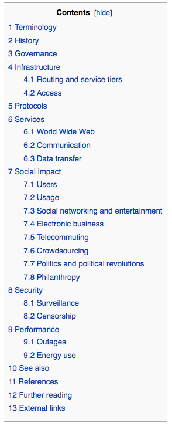
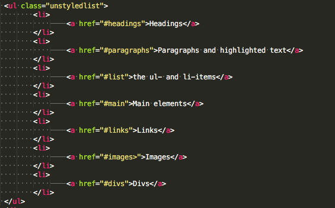
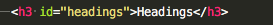

In Unit 1 you learned about selectors. We obviously have 2 kinds of them. We are talking about the class selector (selects a class) and the element selector (selects an element). A class selector needs to look like this (.class { property: value;} ) and a element selector normally looks like this (element { property: value;} ).When we try to keep it dry (hope you remember) it's clever to use classes you alredy created classes, even if there are things in it you don't want to adress. You are able to use id's and mix up your selectors. Talking about selectors you could just write down things like that: .class element { property: value;}. That would mean that every element called maybe p will be mentioned if its for example in the class jumbotron.
If you have unique points in your website you want to mark, id's are a beautiful thing. You can even build tables of content with that technology. Here's a well known example:
you remember? WIKIPEDIA!!! Yes!!! Let's build a Wiki-Site-Content-Table!!! If you want (and you want, I know) to build such a thing, you have to put an id into a div that matches a list in which you can put id links which link to another point (the id) in your HTML-document (webpage). Just add a id bhind a class and then go on like here shown. Don't forget to notice, before the name of your id in the link add a #.
 margin: changes margin
padding: changes padding
text-align: aligns text
text-decoration: decorates the text in different ways
text-shadow: adds and edits the shadow of a text
float: floats the elements to one site
display: changes the kind of element to inline, inline-block or block
transition: gives the browser information about the length of a transition
max-width: limitates the maximum width the browser is allowed to show your content
background-repeat: disallows/allows the browser to repeat a backdround, if it's too small.
Do you remember the image at the bottom of the site in the border-lesson? This is called the box-model. As you could see in the picture, there are 3 different boxes around the content. In the first you can find the padding, in the second there is the border and in the third we can see the margin. If you change those the space around your content will change and by the way, we have another good tip for you: just try to tipe in 0 auto in the margin-property. It will do same as text-align: center, with text does. If there's enough space it will center your objects you created.